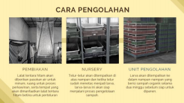
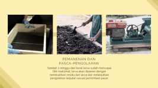

Larva Lalat Tentara Hitam: Titik Terang Permasalahan Sampah Organik Indonesia?
Oleh : Paipisang
Larva lalat? Bukannya larva lalat sama saja seperti belatung yang menjijikkan? Lalat bukannya selalu disandingkan dengan sampah sebagai penambah masalah? Kenapa tiba-tiba menjadi sebuah solusi?
Mungkin pertanyaan-pertanyaan di atas adalah pertanyaan pertama yang muncul dalam benak readers saat pertama kali membaca judul artikel ini. Namun judul tersebut tidak salah kok, readers. Larva lalat tentara hitam memang menjadi titik terang bahkan digadang gadang bisa menjadi salah satu solusi mutakhir permasalahan pengelolaan sampah organik Indonesia yang nampak seperti bahasan yang tidak ada ujungnya selama beberapa dekade terakhir. Lalu bagaimana caranya larva lalat bisa mengelola sampah? Sebelumnya kita lihat sekilas mengapa permasalahan sampah selalu mendapat sorotan sebagai salah satu masalah dengan urgensi terbesar di Indonesia.
Berdasarkan salah satu laporan Kementerian Lingkungan Hidup dan Kehutanan Republik Indonesia pada tahun 2020 jumlah timbulan sampah di Indonesia mencapai 67,8 juta ton per tahunnya, menempatkan Indonesia pada peringkat satu produsen sampah terbesar di Asia Tenggara. Ditambah lagi dengan fakta bahwa 60 persen komposisi sampah Indonesia adalah sampah organik dan 69 persen sampah berakhir di tempat pembuangan akhir (landfill) tanpa diolah, hal ini dapat berpotensi membahayakan sekaligus menyia-nyiakan sumber daya yang seharusnya dapat diproses lebih lanjut untuk menjadi produk bermanfaat lainnya.
Fakta mengejutkan lainnya adalah bahwa sampah organik yang yang dibiarkan di TPA (landfill) tadi akan mengalami pembusukan anaerobik dan menghasilkan gas metana (CH4). Gas metana yang terlepas ke atmosfer inilah yang berbahaya dengan sifatnya yang memiliki efek 25 kali lebih berbahaya dibanding gas karbon dioksida (CO2) dalam perannya sebagai gas rumah kaca. Pada akhirnya, proses ini hanya akan mempercepat laju krisis iklim dunia saat ini.
Data-data ini hanya akan diperparah dengan sifat penduduk urban yang konsumtif terutama dalam aspek makanan dan malah menimbulkan masalah baru yaitu Food Loss and Waste atau makanan yang terbuang sia-sia. Di ibukota sendiri, 3.639,8 ton sampah pangan terangkut setiap harinya, melebihi sampah anorganik sebanyak 499,8 ton. Hal ini menegaskan lebih lanjut salah satu catatan Survei Ekonomi Nasional (Susenas 2018) yang menjelaskan bahwa mayoritas kota-kota besar Indonesia menghasilkan sampah pangan lebih banyak dibanding jenis-jenis sampah lainnya.
Setelah membaca fakta-fakta di atas, mungkin readers akan kembali bertanya. Lalu bagaimana sebuah larva lalat yang kecil mungil memberantas masalah yang terkesan masif dan gigantik ini?
Jawabannya adalah biokonversi. Apa sih biokonversi itu? Singkatnya, biokonversi adalah proses natural atau alamiah yang dilakukan dengan agen larva serangga yang memakan dan mengonversikan nutrisi pada sampah-sampah organik menjadi biomassa larva serangga.
Nah, lalat tentara hitam atau dalam nama ilmiahnya Hermetica illucens adalah salah satu agen biokonversi yang paling populer karena peluangnya yang menjanjikan sebagai larva dengan kemampuan dekomposisi terbaik (Guerero dkk, 2013). Tidak hanya itu, larva ini juga berpotensi sebagai sumber protein bagi hewan ternak dan hewan peliharaan, pupuk organik, serta bahan-bahan farmasi maupun kosmetik.
Terlebih lagi, skala fasilitas pengolahan dapat disesuaikan dalam berbagai skala dan modal sehingga bisa dilakukan oleh masyarakat dengan kalangan ekonomi apapun. Jadi sebelum menilik lebih jauh lagi, mari kita intip proses biokonversi lalat tentara hitam ini dalam skala menengah-besar.


Sumber Eawag – Swiss Federal Institute of Aquatic Science and Technology, 2017. Black Soldier Fly Biowaste Processing
Setelah kita lihat proses pengolahan di atas, dapat terlihat bahwa tahapan siklus hidup larva lalat tentara hitam merupakan pemakan yang lahap. Larva inilah yang nantinya akan mengubah sampah-sampah organik menjadi biomassa larva itu sendiri dan nantinya memiliki potensi ekonomi menjadi pakan ternak maupun bahan-bahan lainnya seperti bahan farmasi dan kosmetik.
Tapi tunggu, lalat bukannya tergolong hewan hama dan vektor penyakit? Sama sekali tidak, readers. Nyatanya, lalat tentara hitam jauh berbeda dengan lalat hijau rumah biasa yang sangat mengganggu. Jangkauan terbang lalat tentara hitam jauh lebih kecil dibanding lalat rumah karena mulutnya yang tidak terbentuk sempurna pada siklus hidup dewasa menyebabkan mereka tidak mencari dan hinggap pada makanan-makanan manusia.
Lalat tentara hitam juga tidak menggigit maupun menyengat bahkan tidak sama sekali tertarik dengan aktivitas manusia. Tidak kalah penting, lalat tentara hitam ini juga berukuran lebih besar daripada lalat rumah ataupun langau sehingga membuat lalat-lalat mengganggu tersebut menghindar dan mencegah mereka bertelur apalagi berhabitasi. Jadi tidak ada lagi tuh, readers lalat-lalat rumah yang mengganggu. Menguntungkan sekali bukan?
Terakhir, keuntungan serta daya tarik ekonominya apa? Larva yang telah lahap memakan sampah organik selama 2 minggu itu pada akhirnya akan terdiri dari ± 35% protein dan ±30% lemak kasar. Tentunya sebuah nominal nutrisi yang sangat cukup dan sangat menguntungkan bagi ternak dan peternak itu sendiri.
Tidak hanya larvanya, residu yang dihasilkan dalam pengolahan ini juga dilansir sangat mirip dengan kompos yang mengandung nutrien dan unsur organik yang dapat mengurangi penipisan nutrisi tanah (soil depletion). Yang paling utama, dalam proses pengolahannya, tidak diperlukan adanya teknologi yang canggih sehingga dapat diterapkan pada daerah low-income yang bergantung pada teknologi sederhana dan tenaga kerja dengan keterampilan rendah.
Keren bukan, readers? Model pengelolaan sampah dengan biokonversi ini sudah mulai dicoba di berbagai negara, salah satunya di negara tetangga kita Singapura dan terbukti model biokonversi lalat tentara hitam ini cukup efisien dan memiliki peluang bisnis yang menjanjikan.
Bahkan dalam penerapannya di Singapura, hasil dari pengolahan sampah organik ini tidak hanya menghasilkan pakan bagi hewan ternak, namun juga dapat menjadi pakan hewan peliharaan, pupuk organik (dihasilkan dari sisa atau leftover dari proses biokonversi yang berlangsung), bahkan dapat diolah menjadi bahan-bahan pharmaceuticals dan kosmetik seperti chitin (nantinya dapat diproses menjadi bahan untuk industri farmasi), dan produk-produk bernilai ekonomi lainnya.
Oleh karena itu, mari kita berharap agar model ini dapat diimplementasikan secara meluas di Indonesia agar model bisnis ini nantinya dapat menjadi solusi paling mutakhir, efektif, dan efisien untuk masalah pengelolaan sampah organik Indonesia sekaligus mewujudkan mimpi serta target pembangunan berkelanjutan Indonesia.